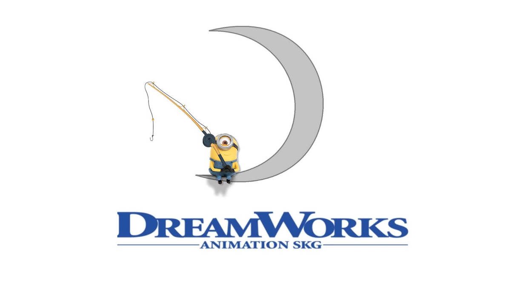

.png)
The Walt Disney Company, commonly known as Disney (/ˈdɪzni/),[4] is an American multinational mass media
and
entertainment conglomerate that is headquartered at the Walt Disney Studios complex in Burbank,
California. Disney was
founded on October 16, 1923, by brothers Walt and Roy O. Disney as Disney Brothers Studio; it also
operated under the
names Walt Disney Studio and Walt Disney Productions before changing its name to The Walt Disney Company
in 1986. Early
in its existence, the company established itself as a leader in the animation industry, with the
creation of the widely
popular character Mickey Mouse, who first appeared in Steamboat Willie, which used synchronized sound,
to become the
first post-produced sound cartoon.[5] The character would go on to become the company's mascot.
After becoming a major success by the early 1940s, the company diversified into live-action films,
television, and theme
parks in the 1950s. Following Walt Disney's death in 1966, the company's profits, especially in the
animation division,
began to decline. Once Disney's shareholders voted Michael Eisner as the head of the company in 1984, it
became
overwhelmingly successful during a period called the Disney Renaissance. In 2005, under new CEO Bob
Iger, the company
started to expand and acquire other corporations. Bob Chapek became the head of Disney in 2020 after
Iger's retirement.
Chapek was ousted in 2022 and Iger was reinstated as CEO.
Warner Bros. Entertainment Inc. (commonly known as Warner Bros.[a] or abbreviated as WB) is an American film and entertainment studio headquartered at the Warner Bros. Studios complex in Burbank, California, and a subsidiary of Warner Bros. Discovery. Founded in 1923 by four brothers, Harry, Albert, Sam, and Jack Warner, the company established itself as a leader in the American film industry before diversifying into animation, television, and video games, and is one of the "Big Five" major American film studios, as well as a member of the Motion Picture Association (MPA). The company is known for its film studio division, the Warner Bros. Pictures Group, which includes Warner Bros. Pictures, New Line Cinema, Warner Bros. Pictures Animation, Castle Rock Entertainment, and DC Studios. Among its other assets, stands the television production company Warner Bros. Television Studios. Bugs Bunny, a cartoon character created for the Looney Tunes series, is the company's official mascot.
History: The company's name originated from the founding Warner brothers (born Wonsal, Woron and Wonskolaser[6][7][8] before Anglicization):[9][10] Harry, Albert, Sam, and Jack Warner. Harry, Albert and Sam emigrated as young children with their Polish-Jewish[11][12][13][14] mother to the United States from Krasnosielc, Poland (then part of Congress Poland within the Russian Empire), in October 1889, a year after their father emigrated to the U.S. and settled in Baltimore, Maryland. As in many other immigrant families, the elder Wonsal children gradually acquired anglicized versions of their Yiddish-sounding names: Szmuel Wonsal became Samuel Warner (nicknamed "Sam"), Hirsz Wonsal became Harry Warner, and Aaron Wonsal (although born with a given name common in the Americas) became Albert Warner.[15] Jack, the youngest brother, was born in London, Ontario, during the family's two-year residency in Canada.
Apple TV+ is an American subscription streaming service owned and operated by Apple Inc. Launched on November 1, 2019, it offers a selection of original production film and television series called Apple Originals.[9] The service was announced during the Apple Special Event of March 2019,[10][11] where entertainers from Apple TV+ projects appeared
on-stage, among them Jennifer Aniston, Oprah Winfrey and Steven Spielberg.[12][13] The service can be accessed through Apple's website and through the Apple TV app, which has gradually become available for many Apple devices and some major competing Digital media player,[14] including some smart TV models and video-game consoles. Apple plans to expand the services' availability,[15][16][17][18] and there are workarounds for subscribers whose device is not presently supported.[14] Access is included in the Apple One.[19] Most of the content is available in Dolby Vision profile 5 and Atmos. Upon its debut, Apple TV+ was available in about 100 countries, fewer than the reported target of 150.[20][21] A number of countries were excluded from service despite other Apple products being available.[22][23][24] Commentators noted that the fairly wide initial reach of the service offered Apple an advantage over other recently launched services such as Disney+, and that because Apple distributes its own content through the service instead of distributing licensed third-party content (as, for example, Hulu does) it will not be limited by licensing issues during its expansion.[25][26][27][28] By early 2020, Apple TV+ had poor growth and low subscriber numbers relative to competing services.[29][30][31][32] In the middle of that year, Apple began to license older television programs and films, attempting to stay competitive with other services, attract and retain a viewership for its original content, and convert into subscribers users who were trialling the service.[30][29] The service has become the home to critically acclaimed content: between September 2021 and March 2022, Apple TV+ netted a Primetime Emmy Award for Outstanding Comedy Series with Ted Lasso and the Academy Award for Best Picture with CODA, whose win marked the first Best Picture win for a film distributed by a streaming service.[33] Apple TV+ (along with the simultaneously announced a-la-carte premium-video subscription aggregation service Apple TV app) is part of a concerted effort by Apple to expand its service revenues.[16][34][35]
DreamWorks Animation LLC (DWA, also known as DreamWorks Animation Studios and simply known as DreamWorks) is an American animation studio that produces animated films and television programs and is a subsidiary of Universal Pictures, a division of NBCUniversal, which is itself a division of Comcast. The studio has released a total of 45 feature films as of December 2022, 43 of which were theatrically released. Their catalogue includes several of the highest-grossing animated films of all time, with Shrek 2 (2004) having been the highest at the time of its release.
The studio's first film, Antz, was released on October 2, 1998, and its latest film was Puss in Boots: The Last Wish, which was released on December 21, 2022; their upcoming slate of films includes Ruby Gillman, Teenage Kraken on June 30, 2023, Trolls Band Together on November 17, 2023, and Kung Fu Panda 4 on March 8, 2024.[4][5][6] Formed as a division of DreamWorks Pictures in 1994 with alumni from Amblin Entertainment's former animation branch Amblimation, it was spun off into a separate company in 2004. NBCUniversal acquired DreamWorks Animation at a cost of $3.8 billion in 2016. The studio originally made some traditionally animated films, as well as two stop-motion co-productions with Aardman Animations, but now exclusively relies on computer animation. Its productions, including The Prince of Egypt, Wallace & Gromit: The Curse of the Were-Rabbit, and the Shrek, Madagascar, Kung Fu Panda, and How to Train Your Dragon franchises, have received various accolades, including three Academy Awards, 41 Emmy Awards, numerous Annie Awards, and multiple Golden Globe and BAFTA nominations. Films produced by DreamWorks Animation were originally distributed by DreamWorks Pictures until 2005. Paramount Pictures distributed its releases from 2006 through 2012, and 20th Century Fox (currently known as 20th Century Studios) did the same from 2013 through 2017. All DWA films from 2019 onward have been released through Universal Pictures, which also owns most of the rights to its back catalogue.[7]